Case Studies
用真實戰績說話的品牌出海
從醫美設備、美妝展會、智慧安防到精密機械與皮具製造——以下為部分合作客戶案例，展示社媒矩陣、獨立站、SEM 與 AI 內容如何組合成可落地的海外增長路徑。
中科醫美集團 · 海外品牌推廣
客戶背景
深耕醫美儀器行業 12 年，集研發、製造、銷售與售後於一體。擁有 300 餘名員工、20 多條產品線及獨立模具開發部門，廠房面積超 4000㎡，主營盆底肌修復椅、808 半導體激光脫毛儀、EMS 身體塑形儀、DPL 嫩膚儀、皮膚檢測儀等專業美容醫療設備，支持 OEM／ODM／OBM 定制，已通過 CE、FCC、SGS、TUV、ISO13485 及 ISO9001 等多項國際認證。
目標與打法
透過社媒矩陣大規模曝光提升品牌海外知名度，並將銷售線索引流至獨立站轉化。
- 搭建 TikTok 100 個矩陣賬號，覆蓋英語市場核心區域
- 依託 AI 自動化剪輯體系，實現百賬號內容的規模化、差異化產出，單條內容製作成本大幅低於傳統人工剪輯
- 雙站分層承接不同客群：B2B 專業設備站面向海外經銷商與美容機構，家用美容設備站面向 C 端及居家市場，實現「專業 + 家用」全場景覆蓋
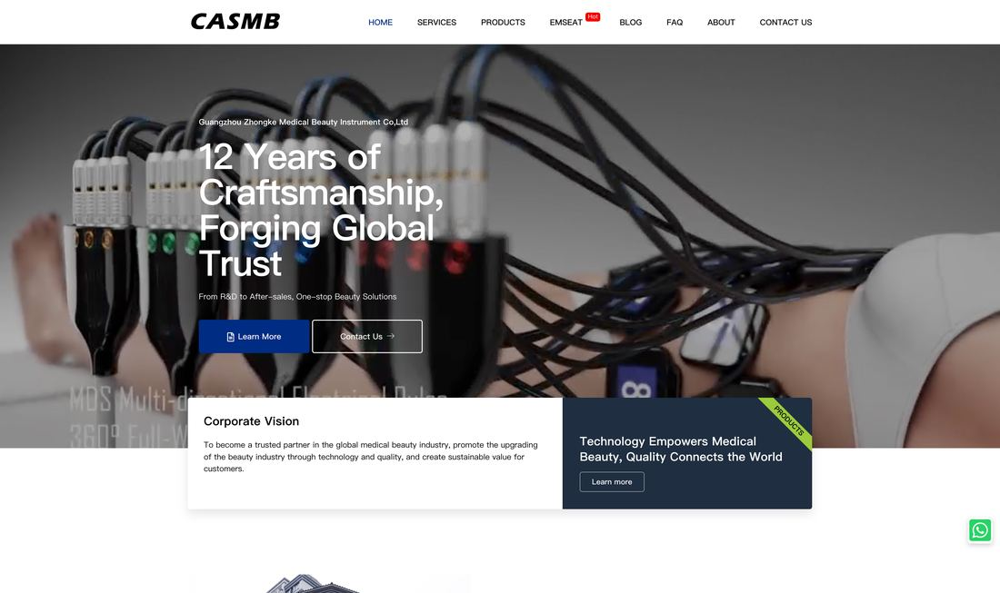
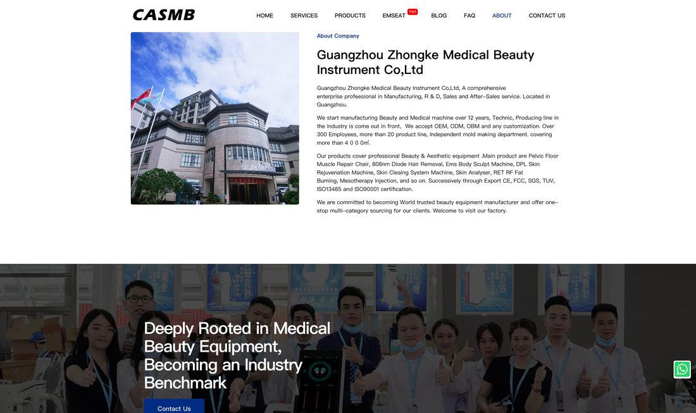
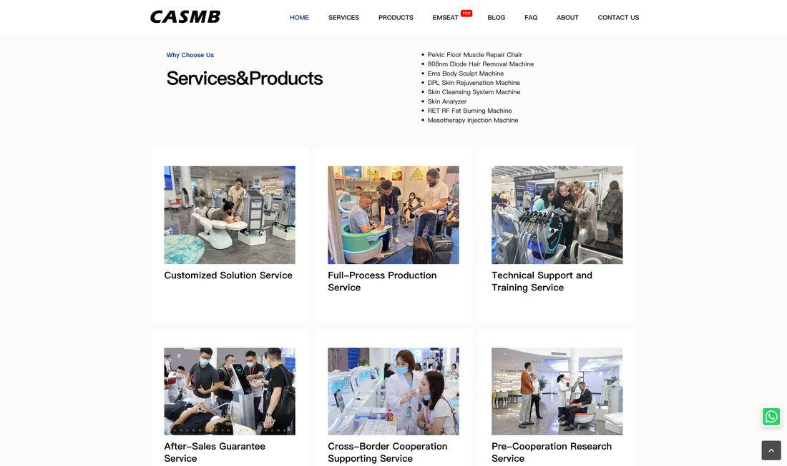
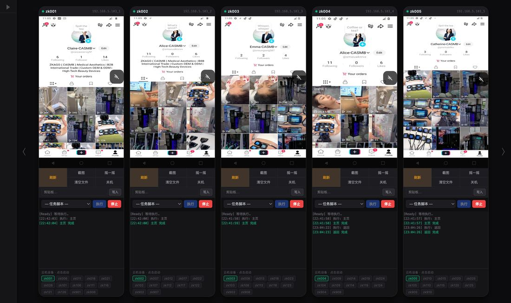
《廣州國際美妝週》海外推廣
項目背景
「廣州國際美妝週」由廣東省藥品監督管理局與廣州市人民政府聯合主辦，以「聚美灣區，妝點世界」為主題，匯聚國內外知名化妝品品牌、供應鏈企業及行業專家，是中國美妝產業面向全球的高規格展示窗口。本項目受行業權威門戶中國美妝網（創立於 2004 年，行業指定信息發布平台）委託，負責美妝週的海外多語言傳播。
目標與打法
透過多語種內容 + 精準投流，提升「廣州國際美妝週」在海外市場的知名度及潛在客戶諮詢量，助力中國美妝出海。
- 橫跨 TikTok、Facebook、Instagram、LinkedIn 四大平台，建立 18 個官方賬號矩陣
- 覆蓋英語（美國、新加坡）、俄語（哈薩克斯坦及中亞周邊）、阿拉伯語（阿聯酋、埃及）三大語區
- 以 AI 數字人實現英／俄／阿三語內容同步產出，突破傳統多語言製作的人力與周期瓶頸
- 自然內容打底 + 付費投流放大，在兩個多月內完成跨四大平台、三大語區的立體傳播
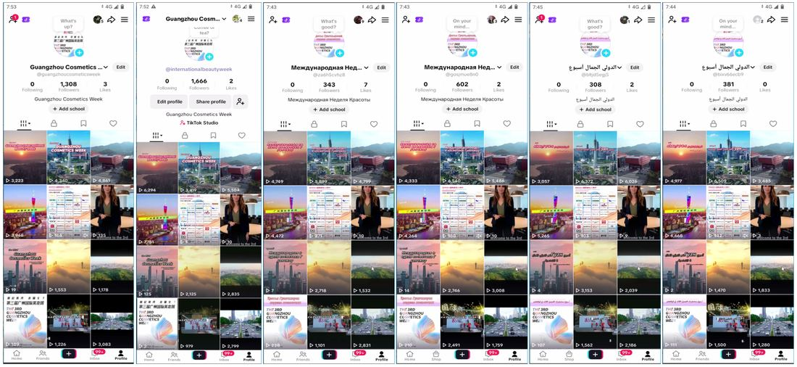
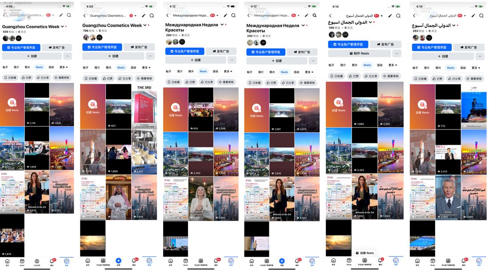
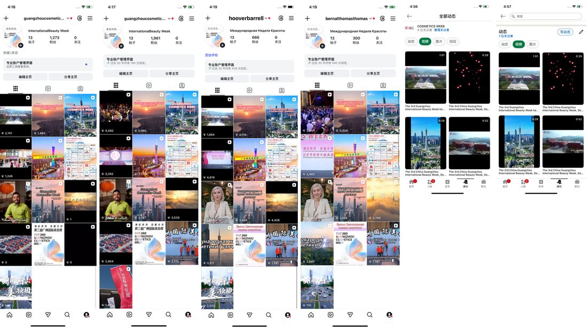
台灣茂業安防 · 海外推廣
客戶背景
台灣知名安防系統整合商、SOYAL（茂旭資訊）特約經銷商，在台北、台中、高雄設有營業處並設廣州辦事處。業務涵蓋門禁考勤系統、CCTV 影像監控、停車管理／車牌識別、訪客管理、智慧建築、智慧工廠、智慧醫療等弱電系統整合，擁有超過 30 年工程整合經驗。
目標與打法
- 透過區域化獨立站 + 深度 SEO，建立品牌在台美兩地的搜索可見度，獲取自然詢盤
- 搭建 AI 企業知識庫，沉澱產品方案與技術資料，提升售前諮詢響應效率
- 配合美國站上線，同步發布 ISC West 2026（拉斯維加斯國際安防展）參展信息，線上線下聯動開拓北美渠道
內容體系
美國站已完成解決方案（門禁考勤、中央監控、停車管理、智慧建築／工廠／醫療）與產品線（道閘、三輥閘、翼閘／擺閘等）的全英文內容體系搭建。
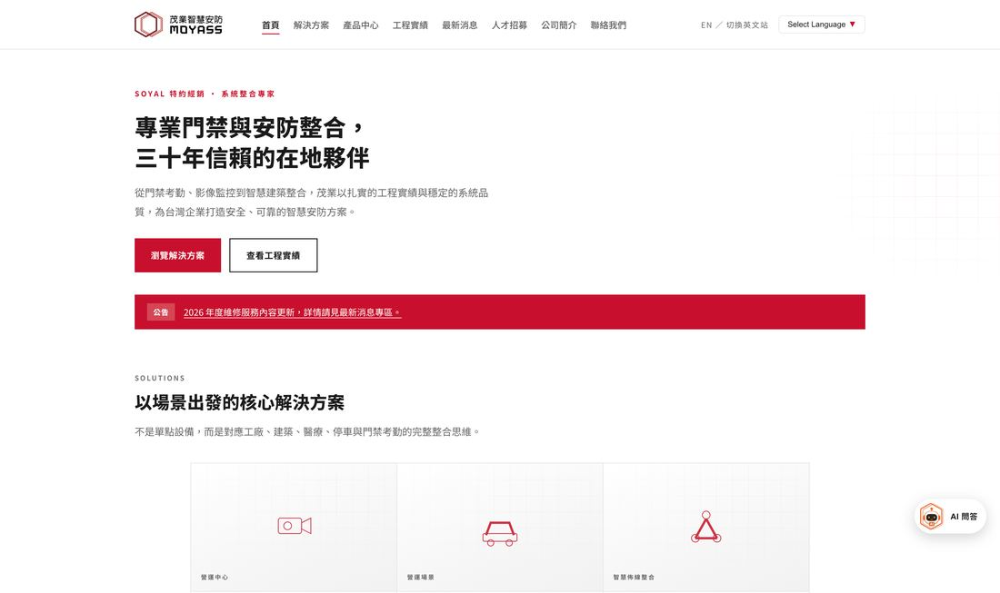
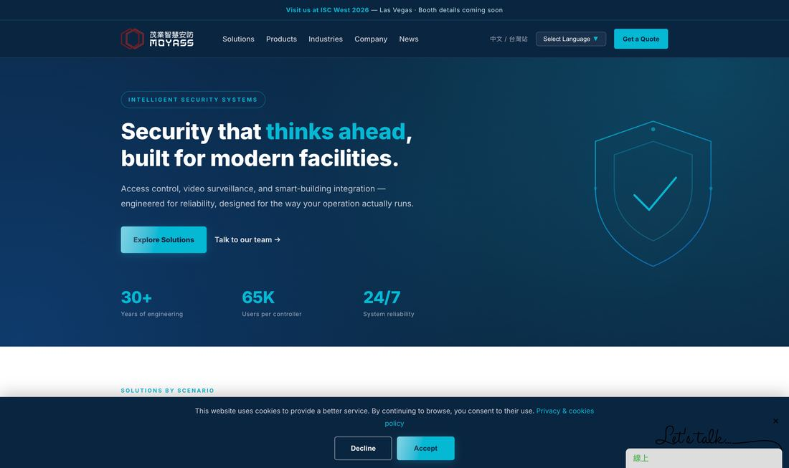
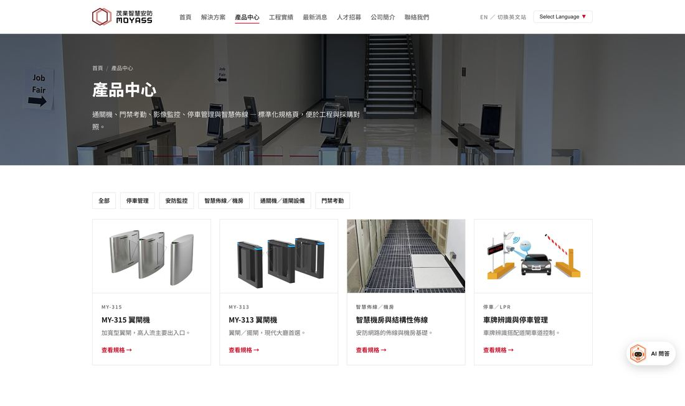
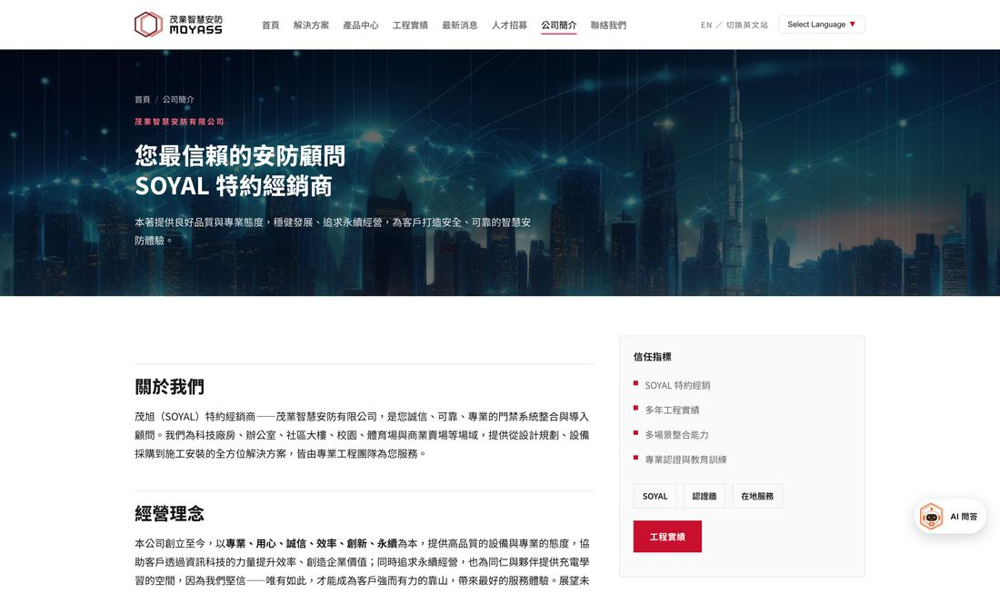
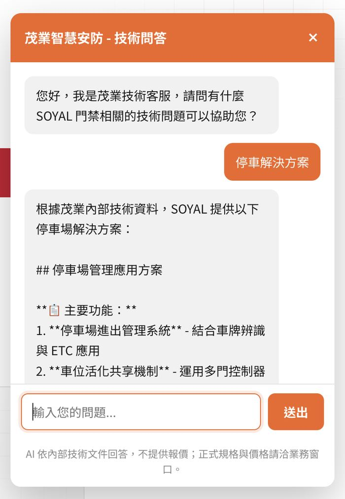
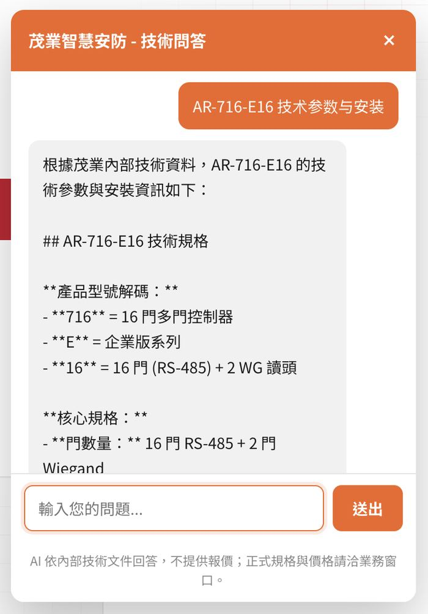
東莞芮安精密機械 · 海外推廣
客戶背景
專注於 CNC 精密加工製造，面向海外工業客戶提供精密零部件加工服務，產品涵蓋自動化 CNC 車床、高精度車銑複合中心與多軸複合加工機型。
目標與打法
以 Google SEM 付費搜索廣告為核心獲客引擎，精準攔截「CNC machining」「precision parts」等高商業意圖搜索詞，將高價值採購詢盤直接引流至獨立站。
- SEM 先行：新站上線初期自然收錄與權重積累需要周期，透過 Google Ads 可即刻獲取精準流量與詢盤，快速驗證市場
- 下一階段規劃：同步推進站內 SEO 基建（sitemap 提交、Search Console 收錄優化、內容建設），逐步降低單詢盤獲客成本，形成「付費 + 自然」雙引擎
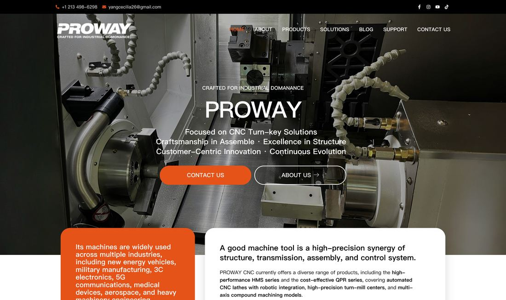
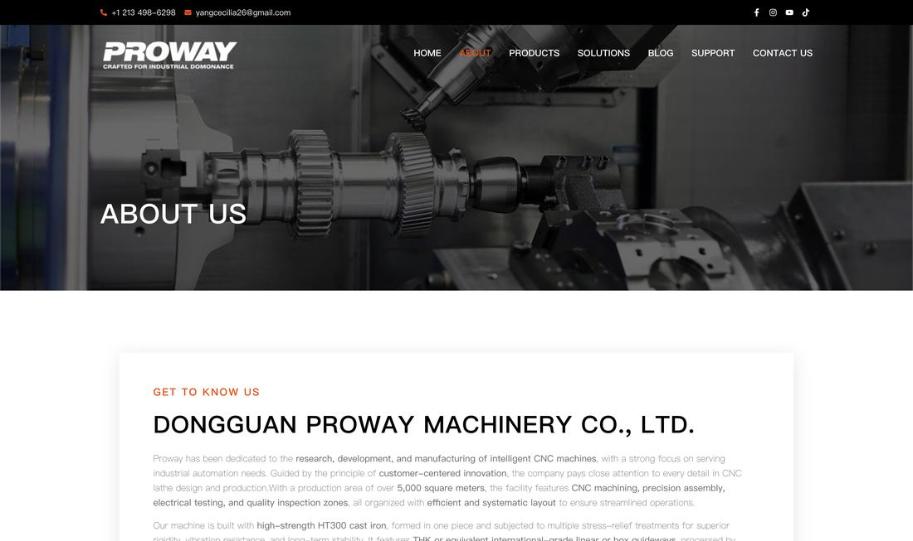
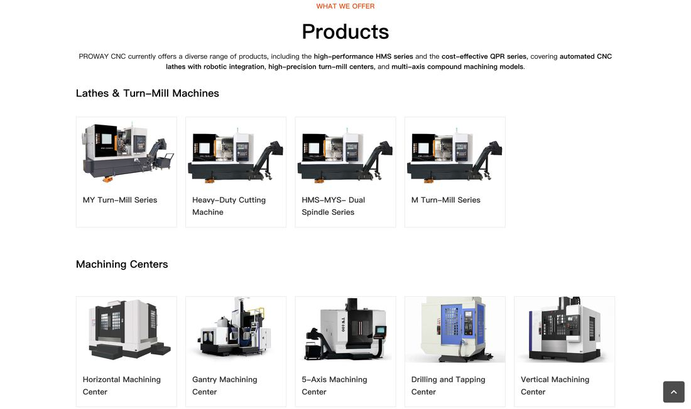
廣州華都皮具 · 海外推廣（外貿獲客版）
客戶背景
位於全國皮具產業核心集聚區——廣州花都／獅嶺皮具產業帶，專注箱包皮具的設計與生產製造，面向海外品牌商、批發商提供 OEM／ODM 服務。
目標與打法
為外貿業務員批量搭建 LinkedIn 職業賬號矩陣（人手一號），以社交主動開發替代對 B2B 平台的單一依賴。
- 統一進行個人品牌包裝：Profile 優化、行業內容規劃、開發信話術模板
- 業務員透過 LinkedIn 主動開發目標客戶，並持續輸出工廠實拍、產品與行業內容，建立專業信任
- 獨立站作為承接頁與信任背書：客戶從 LinkedIn 觸達後進入獨立站查看產能、案例與認證，完成詢盤轉化
- 形成「社交主動開發 → 官網信任承接 → 詢盤成交」的外貿獲客閉環
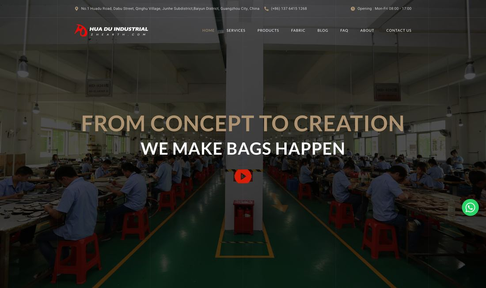
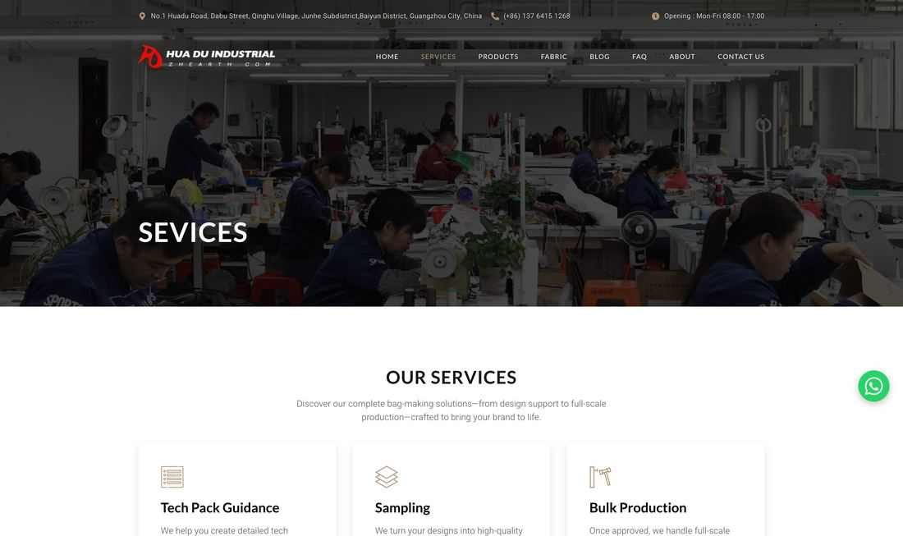
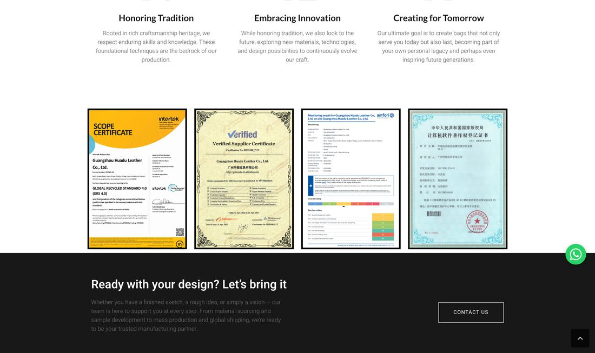
以上數據由項目實際運營數據整理，統計口徑與周期以各案例標註為準；部分項目仍在持續推進中，數據將隨運營周期更新。案例展示已獲客戶知悉，相關品牌與商標歸各自權利人所有。